2.1 Primary versus Secondary Tissues
Primary growth in a plant refers to the plant growing in height; secondary growth refers to the plant becoming wider (i.e., fatter). Different kinds of tissues are involved in both kinds of growth.
This week’s lecture talks about the anatomy of plants in addition to something called the vascular system. We also look at how a plant tissue called the xylem evolves, what makes it up, and what primary and secondary thickening (of the xylem) mean.
There are just three main parts to plants:
Yet, there are also many cell types - for instance:
Primary growth in a plant refers to the plant growing in height; secondary growth refers to the plant becoming wider (i.e., fatter). Different kinds of tissues are involved in both kinds of growth.
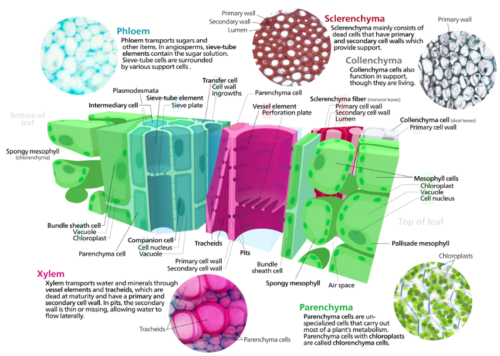
The above figure shows different kinds of cells in plants:
Parenchyma cells
These cells are alive and have a very thin cell wall. However, they are responsible for performing metabolism within the plant.
Collenchyma
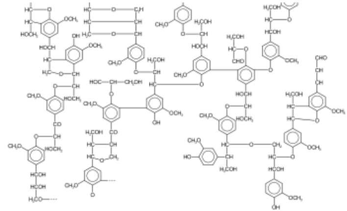
These cells are found in primary tissue, but their cell walls are made of a kind of sugar called cellulose (i.e., not lignin). Cells with a lignified xylem (e.g., fiber and sclerenchyma cells) are usually associated with secondary (and some primary) tissues.
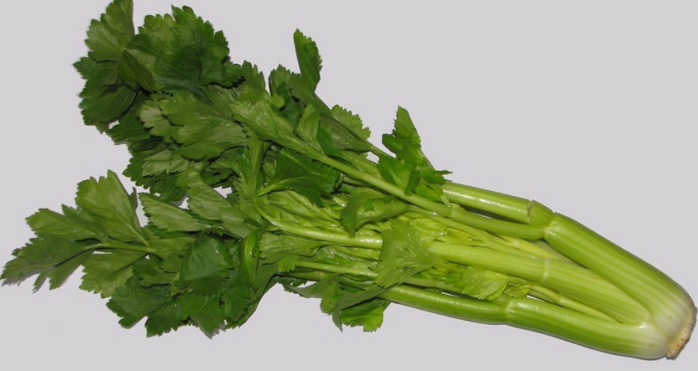
As an example, celery leaves are held up by the celery itself which is made out of collenchyma cells.
These are cells that basically move photosynthate (e.g., sugars and whatnot) and are made up of two things: sieve cells and companion cells.
These tissues serve to move water (i.e., the xylem) and other items (i.e., the phloem) around the plant, and each tissue type serves multiple functions.
This tissue is actually made up of many different cells and are entirely made out of dead cells when in its later stages (i.e., when the xylem reaches “maturity”).
The xylem also forms one continuous column from the plant’s roots to its leaves.
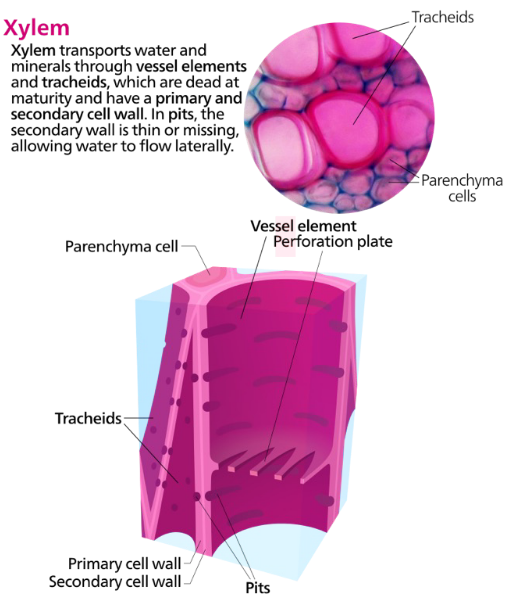
The cells that move water throughout the xylem (i.e., the conducting cells) have two kinds:
Tracheids
These are narrow cells with tapered ends. All plants that have vascular systems have this.
Vessels
These are found in most, but not all flowering plants. These kinds of cells have a larger diameter.
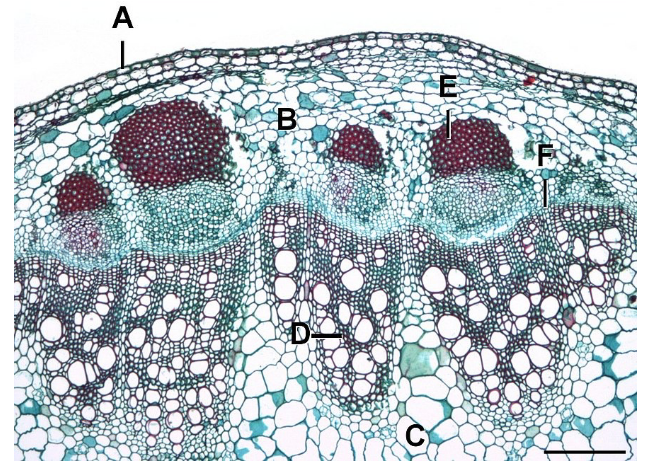
When the xylem thickens, it’s mainly because of the secondary xylem (i.e., wood). It grows because of thet vascular cambium.
Prof. Lum lists some more:
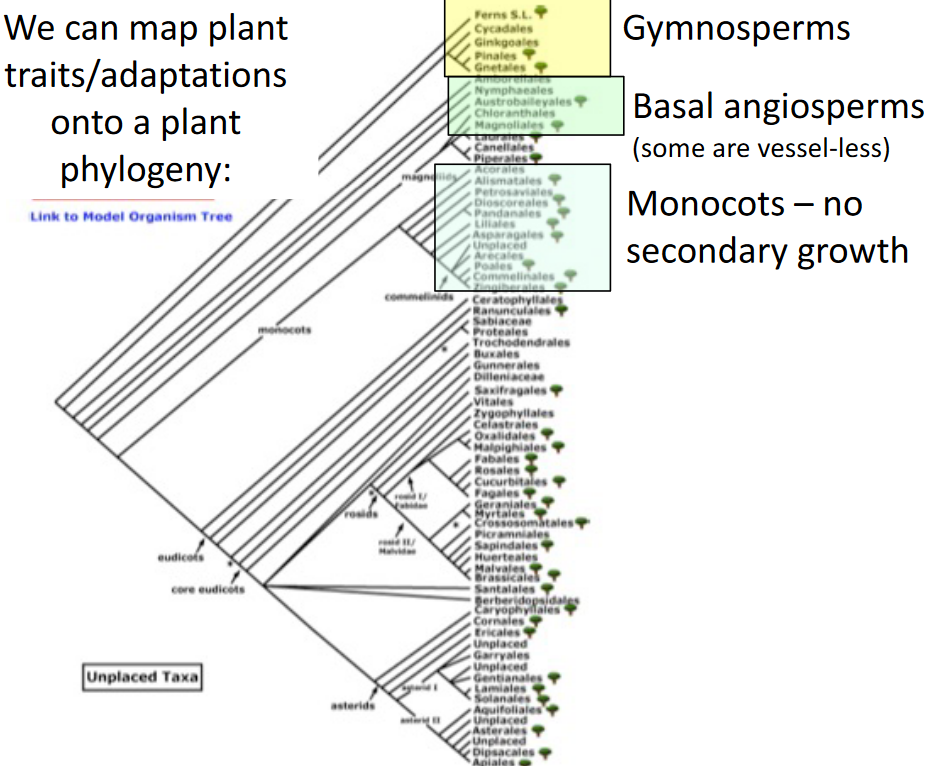
Some angiosperms (i.e., flowering plants) don’t have vessels - that is, they don’t have the xylem or phloem in their structure. Instead, they show vessel-like elements.
Dicotyledonous plants (i.e., dicots) are plants whose seeds have embryos with two things called cotyledons or seedling leaves.
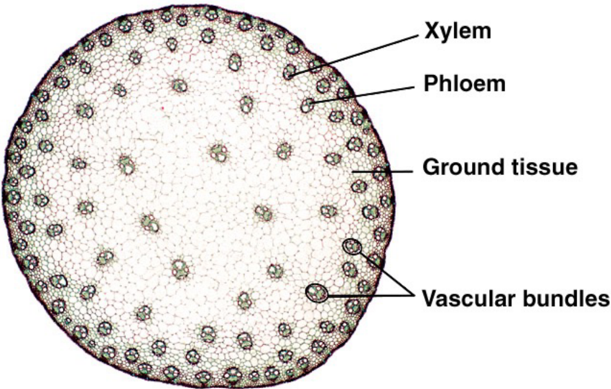
Monocotyledonous plants (i.e., monocots), on the contrary, are plants whose seeds have embryos that only have one cotyledon.
Dicot stems have a ring-like formation because of how their vascular tissue are arranged, whereas monocot stems are more scattered.
These plant organs have a stomata and an epidermis, layers, a vascular system (i.e., phloem and xylem), and may even have special layers to them. There’s also a ton of variation among leaves in terms of their shape and function.
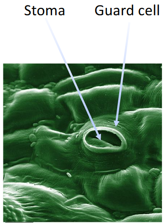
The epidermis is just the outer layer of plant tissues (i.e., kinda like the outer layer of skin on humans). The stoma - on the other hand - are just the pores in the epidermis of tissues that conduct photosynthesis. The stoma has two cells: a pair of guard cells that are surrounded by subsidiary cells.
The organization of vascular tissue and the distribution of stomata differs between monocots and dicots in the following ways:
Roots and shoots differ in terms of how their vascular tissues are arranged. In root tissue, the vascular tissue have protective layers - like an endodermis and a root cap.
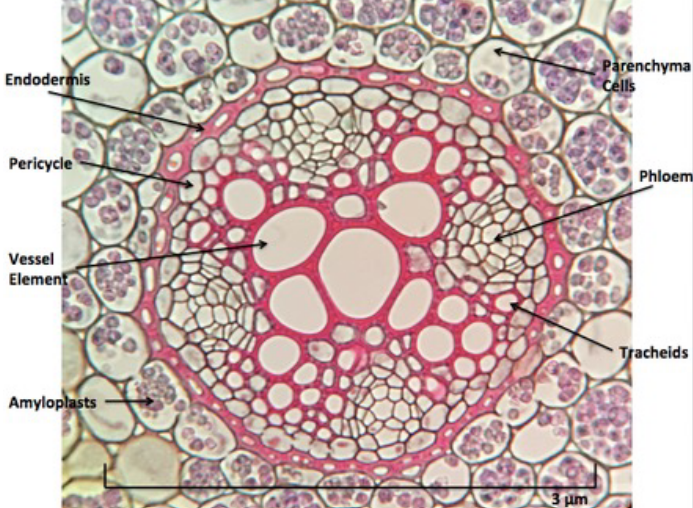
However, root and shoot tissue have something called a zone of maturation. The xylem and the phloem alternate in root tissue (as seen above).
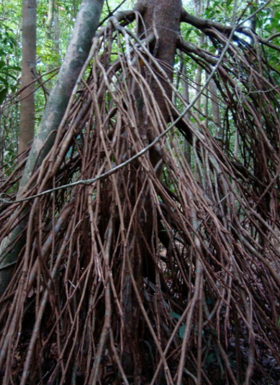
These are roots that have been modified to serve a specific purpose other than just anchoring the plant to the ground. The above tree from a swamp is an example.
Morphology is just the study of plant structure - even though land plants are only made out of three basic things: roots, shoots, and leaves, there are a lot of variations to these things plants live in all sorts of environments.
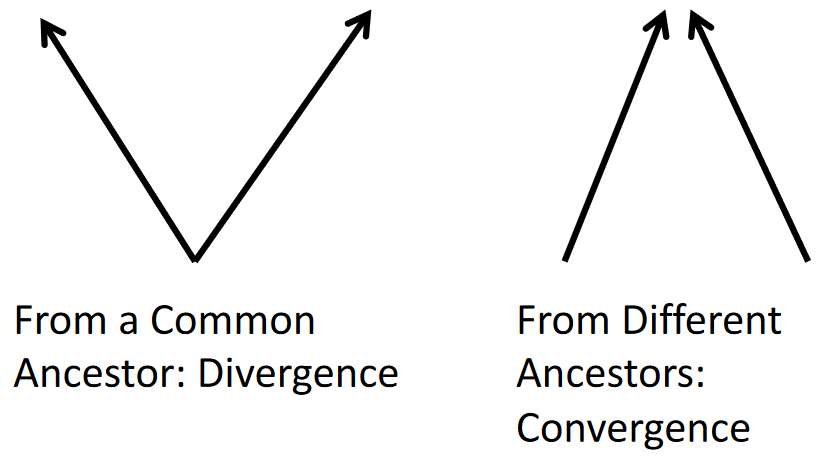
These variations in shoots, roots, and leaves can hint at divergent and convergent evolution.
Fertile fronds are basically leaves that have spores and give rise to the following generation (i.e., gametophytes).
These are just genes that control how plant parts (e.g., roots, shoots, and leaves) develop. It’s only through their differential expression that plant parts like flowers, leaves, and whatnot form. It’s also because of this that we have so many different plants.